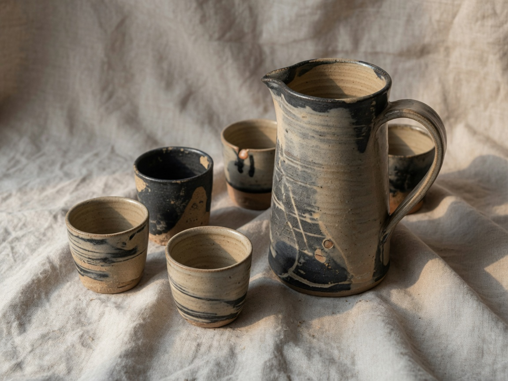
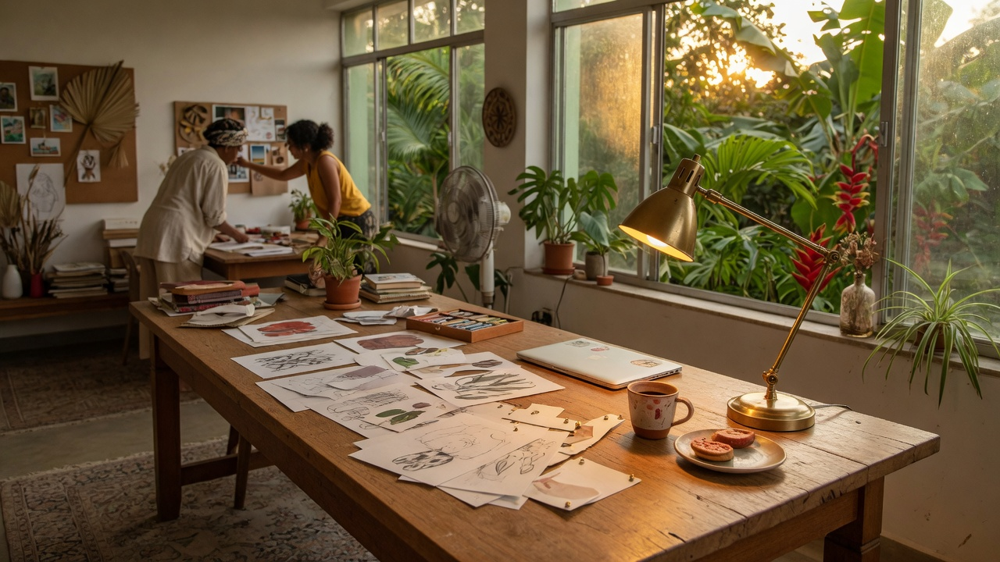
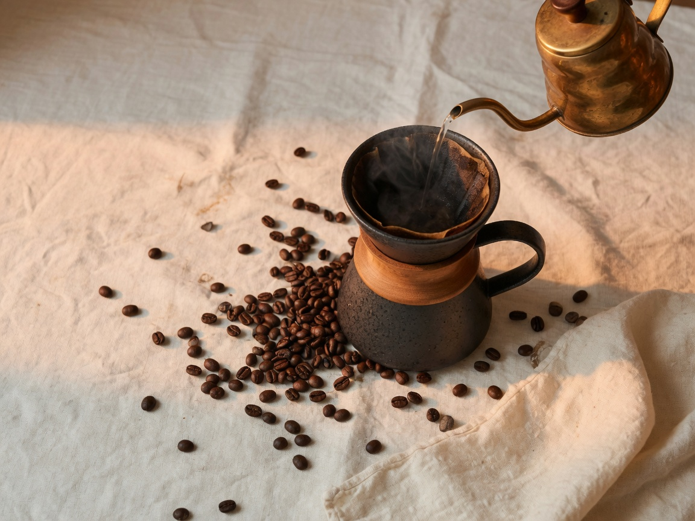
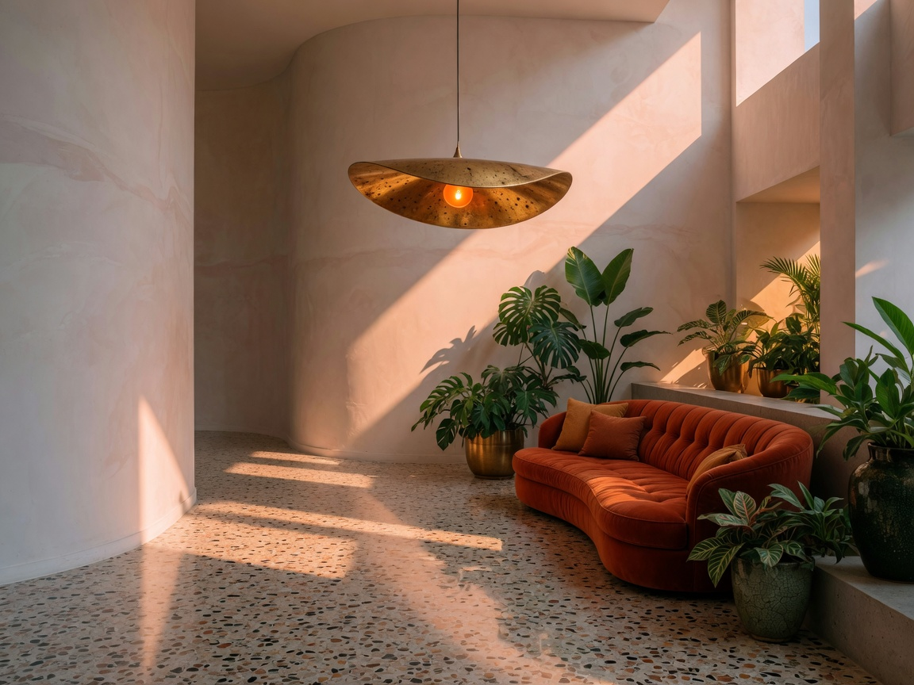

Estudo de caso · Objeto
Oficina Barro
Cerâmica contemporânea que precisava sair da feira sem perder a mão de quem a faz.

O problema
As peças já eram reconhecidas por quem entende. O resto do mundo via “artesanato” — uma palavra que, neste caso, diminuía o trabalho.
A tese
Barro não pede desculpa. A marca deveria parecer tão permanente quanto o vidrado: um ateliê com disciplina de fábrica e alma de oficina.
A marca precisava pesar na mão. Como a peça.

O que fizemos
- Nome curto, símbolo gravado como carimbo no fundo da peça.
- Paleta tirada dos próprios esmaltes: areia, carvão, um verde de redução.
- Embalagem de papelão cru com um único selo de cera.
- Projeto do ateliê-loja em Belo Horizonte — vitrine sem vidro, mesa no centro.


O resultado
A linha cotidiana passou a ser pedida por três hotéis. O ateliê-loja esgota a produção do mês em três semanas. Ninguém mais pergunta se “é artesanato”.
O que ficou
Uma marca que cabe no fundo de um prato. O melhor lugar para um símbolo viver.